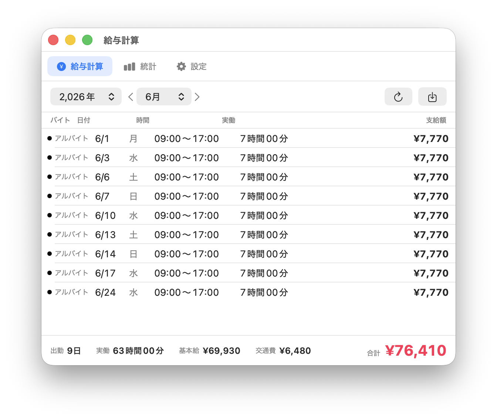
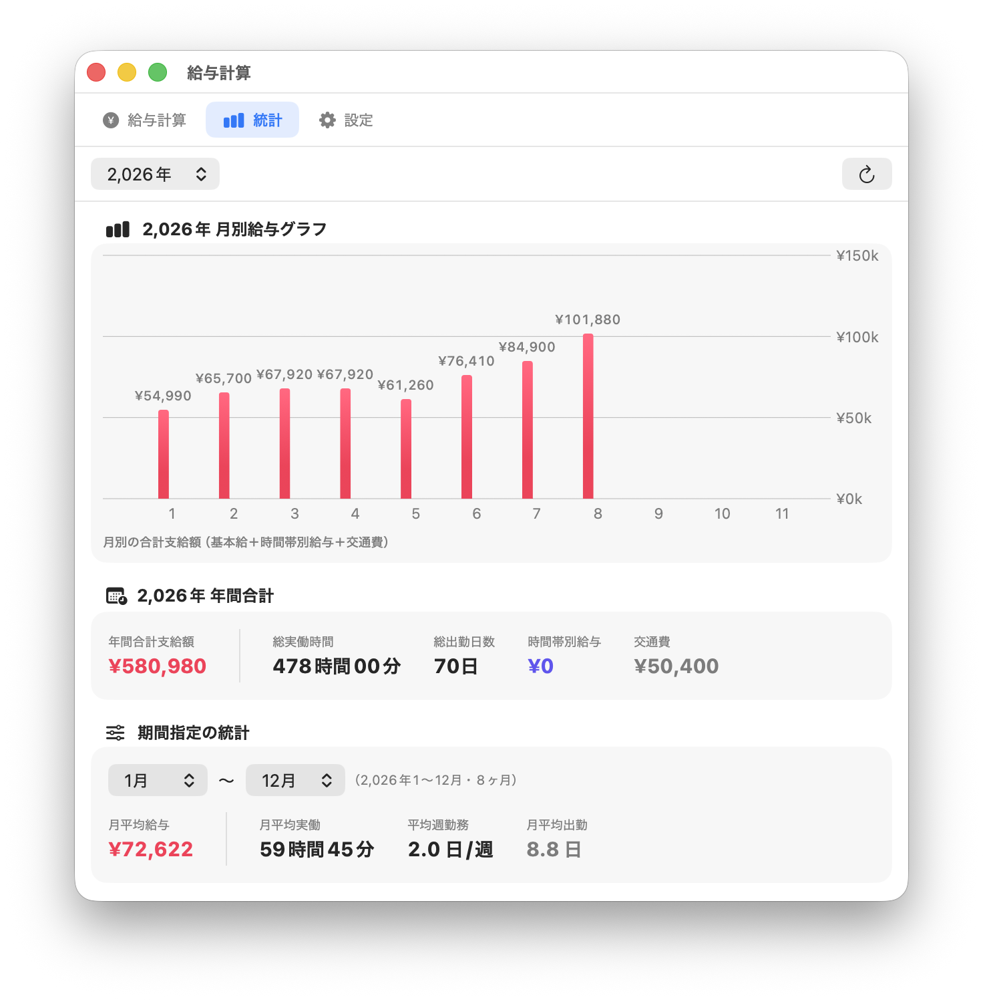
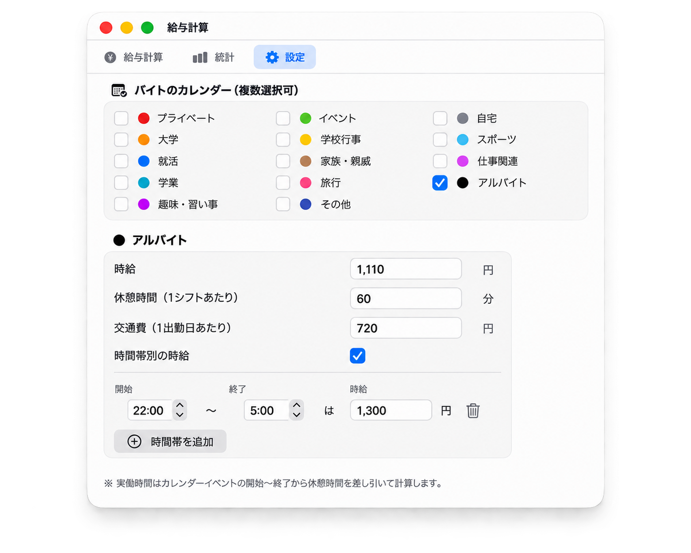

給与計算
カレンダーのシフトから、バイトの給与を自動計算。
iPhoneのカレンダーで登録した予定もiCloud経由で自動的に同期・集計されます
無料 · macOS 14 Sonoma 以降 · Apple Silicon



カレンダーにシフトを入れるだけ。あとはアプリが自動で集計します。
iPhone・Macどちらで入力した予定でも、iCloud同期されていれば集計対象になります。
機能
給与計算に必要なものだけを、シンプルに。
カレンダー連動
Macのカレンダーアプリに入っているシフトを自動で読み込みます。iCloud同期されたカレンダーにも対応しているため、iPhoneのカレンダーで登録したバイトの予定もそのまま集計できます。
バイトごとの条件設定
掛け持ちOK。バイトのカレンダーごとに時給・休憩時間・交通費を個別に設定できます。
時間帯別の時給
深夜22:00〜翌5:00は1,375円、のような時間帯ごとの時給を複数登録可能。日跨ぎシフトにも対応します。
給与の統計
月別給与グラフ、年間合計、期間指定の月平均給与や週あたりの勤務日数をひと目で確認できます。
CSV書き出し
月次の給与明細をワンクリックでCSV出力。Excelやスプレッドシートでそのまま開けます。
データは手元に
計算はすべてMac上で完結。シフト情報が外部に送信されることはありません。
インストール
Releasesページから最新版の DMG をダウンロードして開きます。
表示されたウィンドウで PayrollCalculator.app を Applications フォルダにドラッグします。
初回起動時はセキュリティ警告が表示されます（下記参照）。許可すると以降は普通に起動できます。
アプリ起動後、カレンダーへのアクセスを求められたら「許可」を選んでください。
無料で配布しているためAppleの公証は受けていませんが、以下の手順で最初の1回だけ許可できます。
- 警告ポップアップ右上の ？ をクリックし、Macユーザガイドを開く
- ポップアップの 「完了」 を押して閉じる
- システム設定の「プライバシーとセキュリティ」を開く
- 「セキュリティ」項目に表示された 「このまま開く」 をクリック
- 動作環境
- macOS 14 Sonoma 以降 / Apple Silicon（M1以降）
- 価格
- 無料（オープンソース）
- ソースコード
- GitHub で公開しています